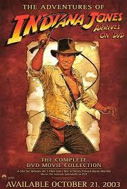
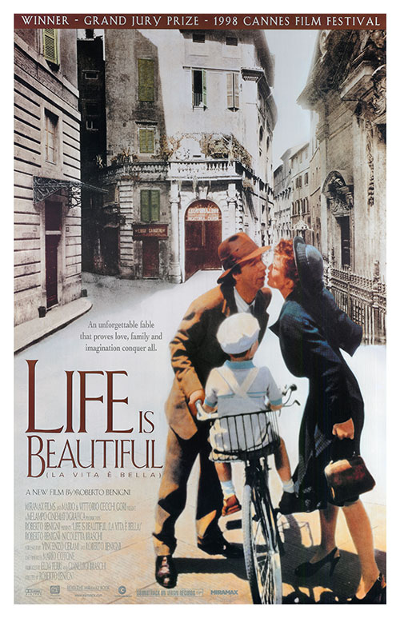
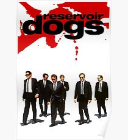
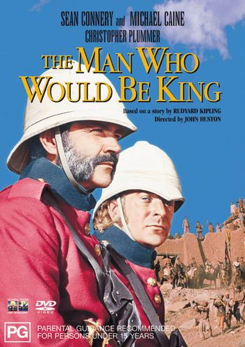

After 8 years as a lawyer I decided to learn to code...
See for yourself2003 - 2006 | Trinity College, Oxford University | Law BA(Hons) Class 2:1
2000 - 2002 | King Edwards Camp Hill School for Boys | A-Levels: English(A) History(A) Geography(A)
In 2015 Bruce Blackwell and I embarked on a 26,000km drive to Mongolia in a 1970's ex-British Army Landrover, along the way we promoted Australian wine from the Barossa Valley and raised money for Prostate Cancer Research. Read more about this adventure here...
Between April and June 2015 I was part of a crew of seven that set sail to cross the Atlantic from Tortola in the British Virgin Islands to the Azores - 3400nm away. Along the way our Captain fell ill, we encountered violent squalls and swam in the ocean thousands of miles from shore. To see some photos from the trip click here...
In April 2017 my wife and I set off on a bike ride to cross Europe and reach the Caucasus Mountains. We cycled the great rivers of Europe, mountains in the Balkans and Turkey and encountered amazing people and places along the way. Read more about this adventure here
|  | Indianna Jones Indiana Jones is the famous archeologist/adventurer/treasure hunter created by George Lucas and Steven Spielberg. Named after Lucas' dog, "Indiana" (whose shaggy appearance was also the inspiration for Chewbacca), Jones appears in four movie releases and many video game expanding the Indiana Jones Legacy. |
 | Life Is Beautiful A tear jerker of epic proportions. In an attempt to hold his family together and help his son survive the horrors of a Jewish Concentration Camp, Guido imagines that the Holocaust is a game and that the grand prize for winning is a tank. In 1939, Jewish-Italian Guido Orefice comes into Arezzo, Italy, ultimately to open a book store. |
 | Reservoir Dogs Possibly the coolest movie of all time. Reservoir Dogs is a 1992 American heist thriller film written and directed by Quentin Tarantino in his feature-length debut. It stars Harvey Keitel, Tim Roth, Chris Penn, Steve Buscemi, Lawrence Tierney, Michael Madsen, Tarantino, and criminal-turned-author Edward Bunker, as members of a botched diamond heist. |
 | The Man Who Would Be King Michael Cane and Sean Connery, what more can you say? The Man Who Would Be King" (1888) is a story by Rudyard Kipling about two British adventurers in British India who become kings of Kafiristan, a remote part of Afghanistan. |